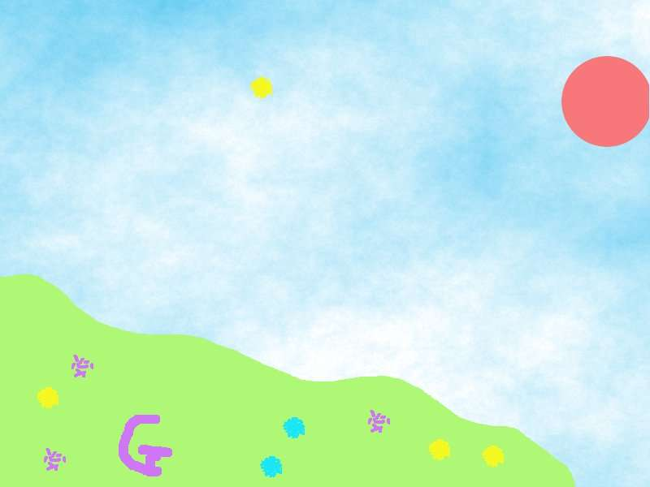

2011-2012 第二学期八年级图像处理教学设计
作者：TeliuTe 来源：基础教程网
二十五、学会历史记录面板 返回目录 下一课
（一）教学设计
1、学习目标：学会历史记录面板
2、注意事项：图层分开
3、教学过程：
1）教师准备学案和板书；
2）学生整队进入，开机抄黑板上笔记；
3）教师讲解板书演示操作；
4）学生打指法、日志、完成操作；
5）教师打勾记录学生指法成绩，检查日志和操作；
注：学生抄完笔记就开始打指法、日志，老师讲完后再继续完成；
（二）板书设计(学生笔记)
第25课 学会历史记录面板
1、编辑、撤消，Ctrl+Z
2、历史记录面板可以快速撤消
3、滤镜、绘制、云彩、Fog..、白云
4、套索、油漆桶、山，太阳
5、修饰，另存 xcf和jpg
操作图示：

（三）课后记
早上试了下篮球，在 gimp 里还做不出来
搞不清里面的“球面化”效果，还有线条的枕状浮雕
--
搜了下ps的教程，找一个可以完成的例子
看到一个做背景图的，可以操作一下
--
大致的效果就是蓝天白云草地，用滤镜和油漆桶
套索工具刚好也学习一下，准备把工具箱里的工具过一遍
--
然后就是菜单里面的各个菜单项，
感觉后面没什么好的实例了，下回把顺序调整一下
--
第一节课停了一会电，让学生下去过一会又来电了
上来接着做，时间紧些不过都做出来了
--
另一个最后一节课，上课高兴的说个不停
不过感觉不像是内心的，这么小就会掩饰吗
--
做的还不错，学生的美术功底也可以发挥一下
做完让把一个网上签名的也完成了，做的还好一些
--
简单的图像处理基本看着就会了，
这样不用对着黑板使劲讲，只要演示一遍就好
--
还有个常规的课堂流程，要是能定下来也挺好的
这样备课上课就不用太费脑筋，有提纲框架添加内容即可
--
上课不用太操心纪律，弄那么累最后还是自己难受
有些小地方也别往心里放，总归是过去的就不用再想
--
返回目录 下一课
本教程由86团学校TeliuTe制作|著作权所有
基础教程网：http://teliute.org/
美丽的校园……
转载和引用本站内容，请保留版权信息和本站链接。